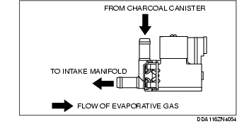

Purge solenoid valve construction/operation [ZY]
• Installed on throttle body.
• Consists of a coil, spring and plunger.
• Opens and closes the passage in the solenoid valve according to the purge solenoid valve control signal (duty signal) from the PCM to control the amount of evaporative gas to be introduced to the intake manifold according to engine operation conditions.

• The signal sent from the PCM energizes the coil and it becomes magnetized, pulling the plunger. The passage between the ports opens when the plunger is pulled, and evaporative gas is introduced to the intake air system according to intake manifold vacuum.